KPConv - Flexible and Deformable Convolution for Point Clouds 리뷰
오늘 소개드릴 논문은 2019년 ICCV에서 소개된 Kpconv: Flexible and deformable convolution for point clouds 논문에 대한 리뷰입니다.
Kernel point convolution(KPConv)는 3D point cloud 형태의 데이터를 처리하기 위한 여러가지 방법들 중 graph나 3D voxel 등의 형태로 변환하지 않고 point cloud에 직접 convolution을 적용하는 류의 방법입니다. 하나의 convolution kernel은 여러 개의 kernel point들로 구성이 되어있고 각 kernel point마다 연속적인 값을 가지는 kernel weight을 배치하여 주변 점들에 대한 convolution 연산을 수행했습니다. 이 때 kernel point의 개수와 위치를 유동적으로 설정해줌으로써 network capacity를 조절할 수 있고, kernel의 형태를 point cloud의 기하학적 형태에 최적화하여 설정해줄 수 있습니다. KPConv는 3D point cloud classification이나 segmentation 등의 task에서 SOTA의 성능을 기록하였습니다. 그럼 지금부터 KPConv를 파헤쳐보겠습니다!
Kernel point convolution
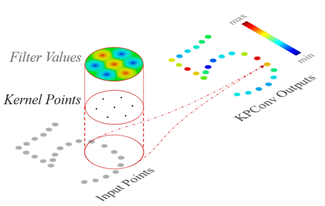
한 점에 대한 kernel point convolution 연산은 일정한 반지름 r 내부에 있는 주변 점들을 대상으로 합니다. 일반적으로 이웃한 점을 정의할 때 이용하는 kNN과 달리, 반지름을 정의하여 내부에 있는 모든 점들을 이웃한 점으로 정의하게 되면, 점 밀도의 변화에 대해 robust하며 해당 점들에 대한 일정 크기의 kernel을 정의하기가 훨씬 더 수월해집니다. 이렇게 구 형태의 kernel 유효 범위를 정의하게 되면, 범위 내에 특정 개수의 kernel point들을 배치하여 kernel point 별로 kernel weight을 할당합니다. Kernel weight은 각 kernel point에 대해 correlation function과 상수 (W) 의 곱으로 정의하며, correlation function은 kernel point와 점의 거리가 가까울수록 커지는 linear function을 이용합니다. 예를 들면, 위의 그림에서 각 kernel point에 대해 kernel point와의 거리가 멀어질수록 filter value의 절대값이 작아지는 것을 볼 수 있습니다. Filter value의 부호나 크기는 학습에 의해 정해지는 kernel의 상수값 W에 따라 달라지고 있습니다.
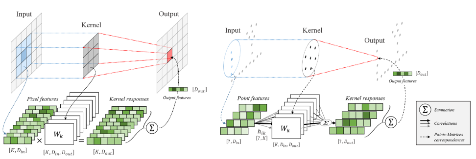
이렇게 여러 개의 kernel point들로 구성된 각 kernel들을 point cloud의 모든 점에 대입하여 convolution 연산을 해줍니다. Kernel의 개수에 따라서 output feature의 차원이 결정됩니다. 또한 모든 kernel 내 filter value들은 학습에 의해 정해집니다. 이는 위의 그림처럼 image에 적용하는 2D convolution과 정확히 같은 형태입니다. 두 경우 모두 각 Kernel에 대해 convolution 연산(elementwise 곱의 합)을 적용하고, 이 결과를 kernel 별로 쌓아 새로운 feature vector를 형성합니다.
논문에서는 사전에 정의되어 고정된 kernel point 위치를 사용하는 rigid KPConv와 주변 점들의 분포에 따라 유동적으로 변화하는 kernel point 위치를 사용하는 deformable KPConv의 두 가지 연산을 정의하는데, rigid KPConv의 경우 classification이나 part segmentation 등 간단한 task에서, deformable KPConv의 경우 semantic segmentation과 같은 어려운 task에서 좋은 성능을 보여주었다고 합니다. 그럼 각각에 대해서 설명해보겠습니다.
-
Rigid kernel point convolution
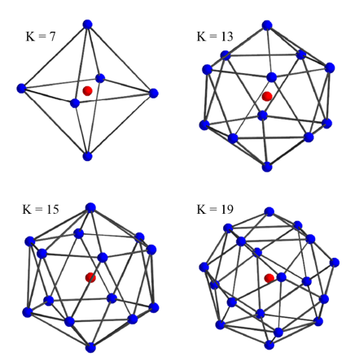
Rigid KPConv는 정해진 몇 개의 kernel point에 대해 kernel weight을 배치하여 convolution 연산을 수행합니다. 가장 효율적으로 convolution 연산을 수행하기 위해 repulsive potential과 attractive potential의 합을 최소화하는 최적화 방정식을 정의하였습니다. 이 때 효율적인 convolution 연산이라는 것은, 각 kernel point들의 correlation range가 kernel의 유효 범위를 모두 포함하며 kernel point 간에 겹치는 범위는 최소화하는 것을 의미합니다. Kernel point의 개수를 K 라고 할 때, 최적화 방정식의 해는 K 값에 따른 가장 효율적인 kernel point들의 배치입니다. 아래 그림에서는 몇 개의 K 값에 대한 kernel point의 배치를 보여주고 있습니다.
-
Deformable kernel point convolution
Rigid kernel point convolution을 정의하면 효율적으로 point cloud가 존재하는 공간의 정보를 모을 수 있습니다. 여기에서 좀 더 나아가서 kernel point들의 위치를 학습을 통해 결정할 수 있다면, 주변 점들의 분포를 가장 이상적으로 표현하도록 kernel point들이 배치될 것이므로, 고정되어 있을 때보다 convolution 연산이 가지는 정보의 capacity가 훨씬 커질것입니다. 또한 3D point cloud 형식의 특성상 점들의 분포가 규칙적이지 않으므로, deformable convolution을 적용하게 되면 점들이 존재하지 않는 공간에 대한 무의미한 kernel point 배치를 최소화할 수 있습니다.
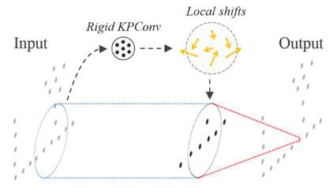
이를 위해 deformable version 의 network에서는, rigid KPConv 연산을 통해 K개 점에 대한 shift vector를 추출해주는 layer를 추가하였습니다. (Shift vector는 xyz 좌표를 포함하므로 총 3K개의 좌표를 추출합니다.) 이렇게 얻어진 벡터를 local shift로 정의하고 이에 따라 kernel point의 위치를 옮겨줍니다. Network 학습 과정에서는 local shift를 생성하는 rigid KPConv layer와 이를 통해 output feature를 생성하는 deformable KPConv layer를 동시에 학습하였습니다.
하지만 이렇게 학습을 진행하게 되면 input point와 접점이 없는 kernel point들은 back propagation 과정에서 gradient 값을 잃게 되고, 결국 network는 kernel point를 잃어버리게 됩니다. 이는 point 들의 분포가 일정하지 않은 3D point cloud의 특성 때문인데, 이를 해결하기 위해 가장 가까운 input neighboring point와의 거리를 제한하는 regularization loss와 kernel point 간의 범위 중복을 최소화하기 위한 repulsive loss를 추가하였습니다.
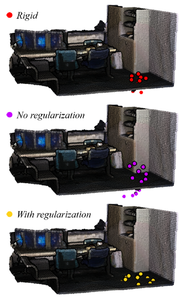
두 loss들을 통해 network는 위의 그림처럼 input point cloud의 geometry와 맞는 형태의 local shift를 추출하였습니다. Regularization loss가 없을 때에는 kernel point들이 input point cloud와 멀리 위치하는 경우들이 존재하였습니다. 이러한 경우에는 convolution 연산이 주변 점들의 정보를 잘 통합하지 못하여 특징 벡터의 표현력이 떨어질 수 밖에 없게됩니다. 하지만 regularization loss를 통해 input point들이 존재하는 영역들에 kernel point를 배치한다면, convolution을 통해서 얻은 특징 벡터가 주변 구조를 더 잘 표현하게 됩니다.
위에서 소개한 두 가지 convolution 연산은 block 형태로 통합되어 전체 network를 구성하는 데에 사용하였습니다. 두 convolution block은 모두 skip-copnnection, batch normalization, leaky ReLU 등을 이용하여 학습의 안정성과 성능을 도모하였습니다. 아래에 구조를 담은 그림을 참고하면, deformable block에서는 KPConv 연산을 통해 3K 크기의 local shift vector를 추출하는 것을 확인할 수 있습니다.
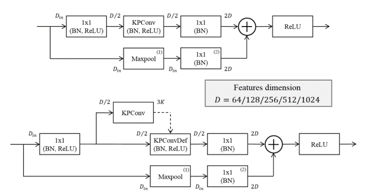
Kernel Point Network
논문에서는 KPConv 연산을 활용하여 network를 구축하였습니다. Network는 U-Net과 유사하게 pooling layer과 upsampling layer를 이용하여 multi-scale의 feature vector를 추출하였습니다. 이 때 pooling을 하면서 점들을 sub-sampling 하는 과정이 필요한데, input point의 density에 independent한 grid subsampling 방법을 이용하였습니다. 이는 점들을 voxel 형태의 grid에 놓은 뒤, 각 grid의 무게중심에 해당하는 점들만을 sampling하는 방법입니다. Pooling 과정은 앞서 설정한 grid의 cell size를 2배씩 키워서 output point의 개수를 줄여나간 뒤에, KPConv를 통해 각 cell 내부의 점들에 대한 feature vector를 통합해주었습니다. 이를 strided KP-Conv라고 부르기도 하였습니다.
Network parameter는 cross validation을 통해서 결정했습니다. Kernel point의 개수는 15, convolution radius와 kernel point radius는 각각 단위길이의 2.5, 1.5배를 이용하였습니다. Subsampling cell size는 pooling layer마다 2배씩 증가하게끔 설정해주었습니다.
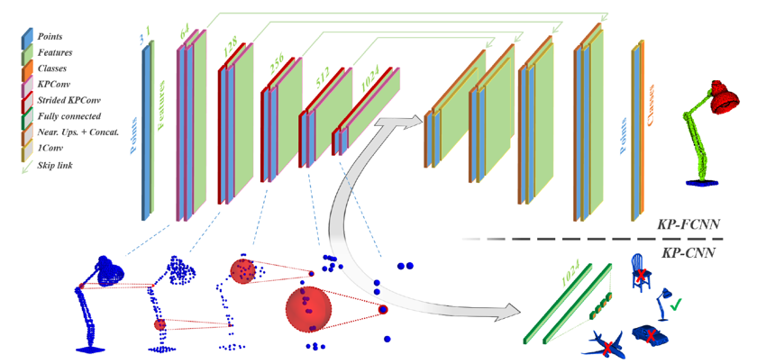
Network는 classification 및 segmentation에 대한 각각의 task 별로 하나씩 구성하였습니다. 위의 그림에서 Classification을 위한 network는 KP-CNN, segmentation을 위한 network는 KP-FCNN이라고 부릅니다. KP-FCNN은 KP-CNN의 encoder 부분을 공유하지만, segmentation task의 특징 상 점들 별로 하나 씩의 class output을 도출해야 하기 때문에, nearest upsampling 과정을 통해 점들의 개수를 맞춰준 후에 point-wise feature를 추출했습니다. 반면에 KP-CNN은 encoder를 통해 얻은 feature vector로부터 fully-connected layer를 활용하여 곧바로 class 정보를 추출하였습니다.
Experiments
- 3D Shape Classification and Segmentation
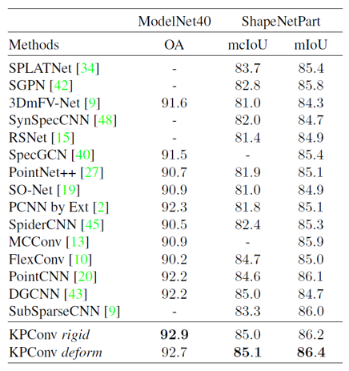
모델은 가장 일반적인 3D classification dataset인 ModelNet40과 part segmentation dataset인 Shapenet을 이용하여 성능을 평가하였습니다. Grid subsampling을 이용했기에 점들의 개수는 data마다 달랐지만, KPConv 과정에서 variable batch size에 대한 normalization 처리를 해주었기 때문에 아무런 문제가 되지 않았습니다. 또한 point cloud의 크기를 바꾸거나, 좌우 반전 및 점들을 일부 제거하는 등의 augmentation 과정을 통해 dataset의 개수를 늘려주었습니다. KPConv를 이용한 두 모델은 각 dataset에 대해 SOTA의 성능을 달성하였습니다.
- 3D Scene Segmentation
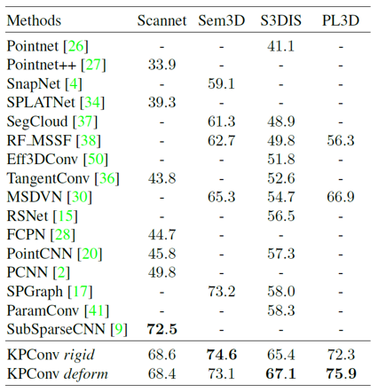
3D scene segmentation task에서는 indoor, outdoor scene에 대한 Scannet, S3DIS, Semantic3D 등의 dataset을 이용하여 성능을 평가하였습니다. 보통 3D scene dataset의 크기가 굉장히 크기 때문에, 부분적으로 구 형태의 subcloud를 분리하고 그에 대해서만 segmentation 작업을 수행했습니다. Network에 input으로 들어가는 구는 2m 또는 4m의 반지름을 가지게끔 설정해주었습니다. Rigid convolution과 deformable convolution을 이용한 network는 각 task에서 모두 뛰어난 성공을 보여주었습니다.
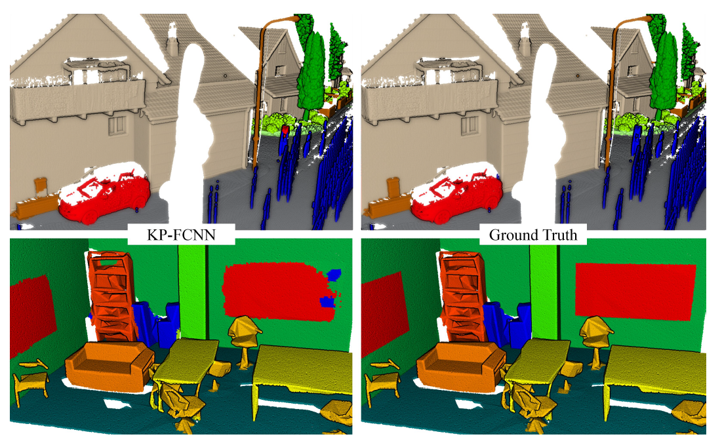
특히 deformable convolution을 활용한 network는 더 큰 capacity를 가지고 있기 때문에 dataset이 더 크고 다양한 data로 구성되어있을 때 더 좋은 성능을 보여주었습니다. 아래의 그림처럼 kernel point의 개수가 줄어들어도, deformable convolution이 충분한 표현력을 가지고 있기 때문에 성능이 크게 줄어들지 않는 것을 확인할 수 있었습니다. 또한 deformable convolution은 class의 종류가 훨씬 다양한 indoor segmentation에서 좋은 성능을 보여주었습니다.
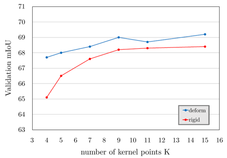
Summary
Kernel point convolution은 point cloud에 직접 convolution을 적용하는 방법으로 classification 및 segmentation task에 대한 SOTA의 성능을 보여주었습니다. 논문에서는 kernel point의 위치가 고정된 rigid KPConv와 객체의 형태에 따라 변화하는 deformable KPConv를 제안하여 dataset의 크기나 다양성에 맞게 convolution block을 선택할 수 있게 제안하였습니다. 또한 연산 방법의 성능을 검증하기 위해 다양한 실험을 진행하였고, github에 코드도 잘 정리되어 있으니 좋은 성능의 3D classification 및 segmentation model이 필요하다면 꼭 알아야 할 연구라고 생각됩니다 :)
참고 문헌 및 출처